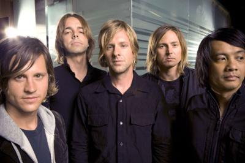

Early-years
We are an American rock band from San Diego, California. Our band members are Jon Foreman (lead vocals, guitar), Tim Foreman (bass guitar, backing vocals), Chad Butler (drums, percussion), Jerome Fontamillas (guitar, keyboards, backing vocals), and Drew Shirley (guitar, backing vocals). After early successes in the Christian rock scene, we first gained mainstream recognition with the inclusion of four of ours songs in the 2002 movie A Walk to Remember. We have been noticed for our energetic live shows, and our seventh studio album Hello Hurricane received a Grammy award in 2011 for Best Rock or Rap Gospel Album.
Style & Influences
Diversity is our strenght to be honnest, we have very diverse
musical tastes when it comes to what music we listen to:
The Beatles, Keith Green, Bob Dylan, Johnny Cash, Michael
Jackson, Mile Davis, Tommy Walker, Stevie Wonder
and so on.
With regards to our lyrics, we try to make music for thinking
people. Our inspiration really comes from the works of
philosophers like Søren Kierkegaard and Augustine of Hippo, as
for example the following songs "Sooner or Later (Soren's Song)"
and "Something More (Augustine's Confession)". "Meant to Live",
this runaway hit, was inspired by T. S. Eliot's poem "The Hollow
Men",[71] while in the "Stars" song we looked at things from the
Descartes perspective.
Our name
"The name Switchfoot comes from a surfing term. We all
love to surf and have been surfing all our lives so to us, the
name made sense. To switch your feet means to take a new stance
facing the opposite direction. It's about change and movement, a
different way of approaching life and music."
~ Jon Foreman ~